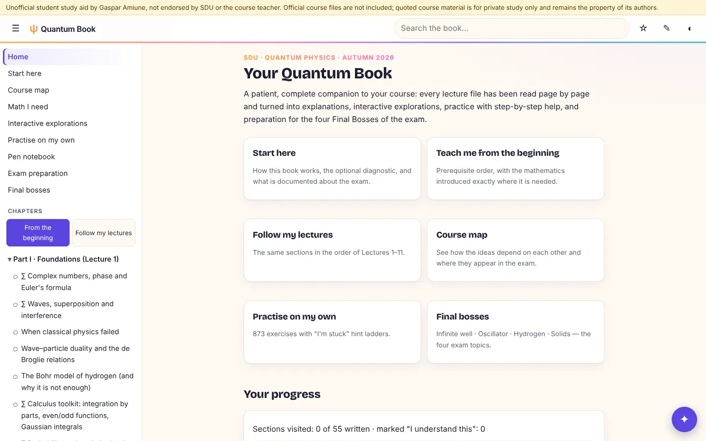

Quantum Book
An interactive companion to my Quantum Physics course: explanations, simulations, 873 exercises and four exam bosses.
Year2026
RoleBuilder
TeamPersonal study project
StatusLive

01The project
I turned a whole semester of Quantum Physics into a book I actually wanted to study from. Every course file was read page by page and turned into explanations, interactive explorations and practice with step-by-step hints.
It ends with four "final bosses", one per exam topic: the infinite well, the oscillator, hydrogen and solids. It is an unofficial study aid, built with AI agents and checked by an independent computation of the answers.
02What I did
- Coverage tracking: every teaching item in the course is linked to an explanation, an exercise or a figure.
- Answer checks: final answers are verified by a second, independent computation.
- Runs fully in the browser: maths rendering, a calculator, notes and pen drawings saved locally.
03Under the hood
JavaScriptthe reader, exercises, simulations and progress tracking.
KaTeX + math.jsmaths typesetting and the built-in calculator.
Node build + Python (numpy, scipy, sympy)turns Markdown/YAML content into the site and checks the answers.